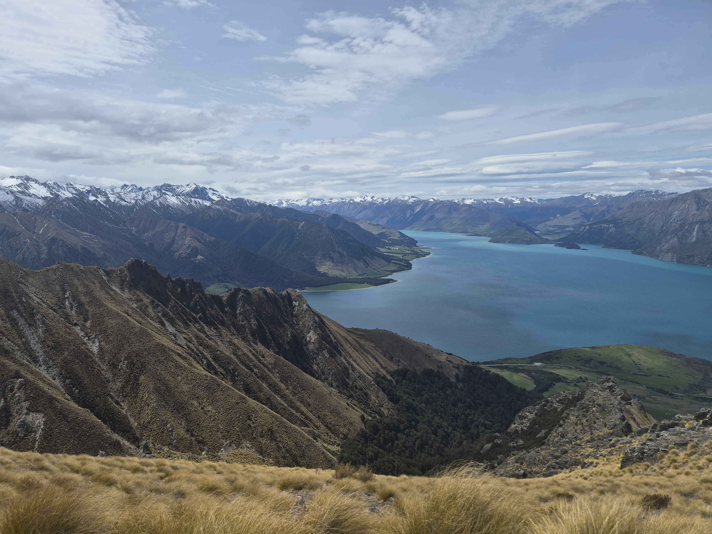
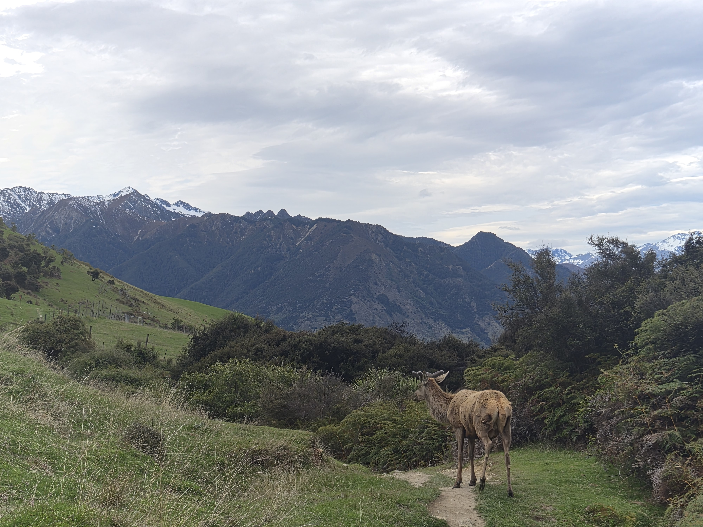
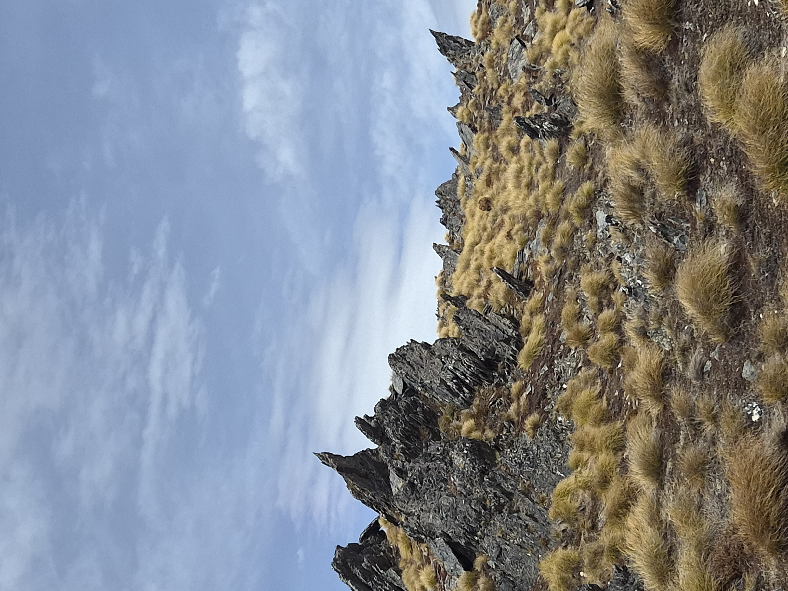
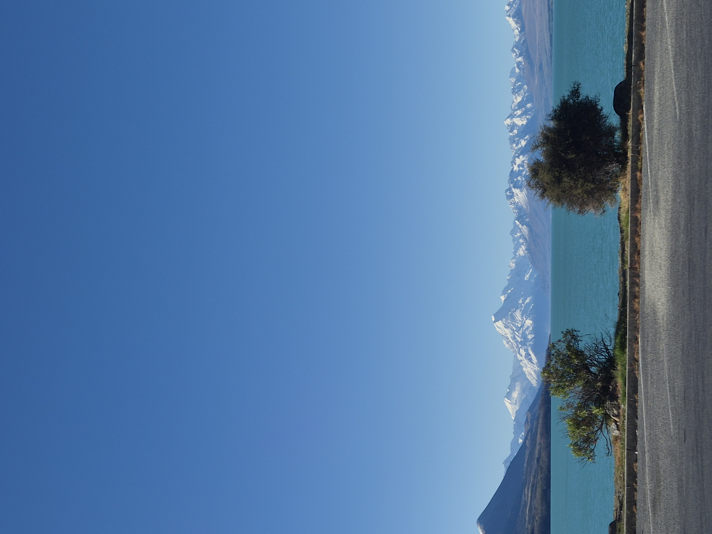
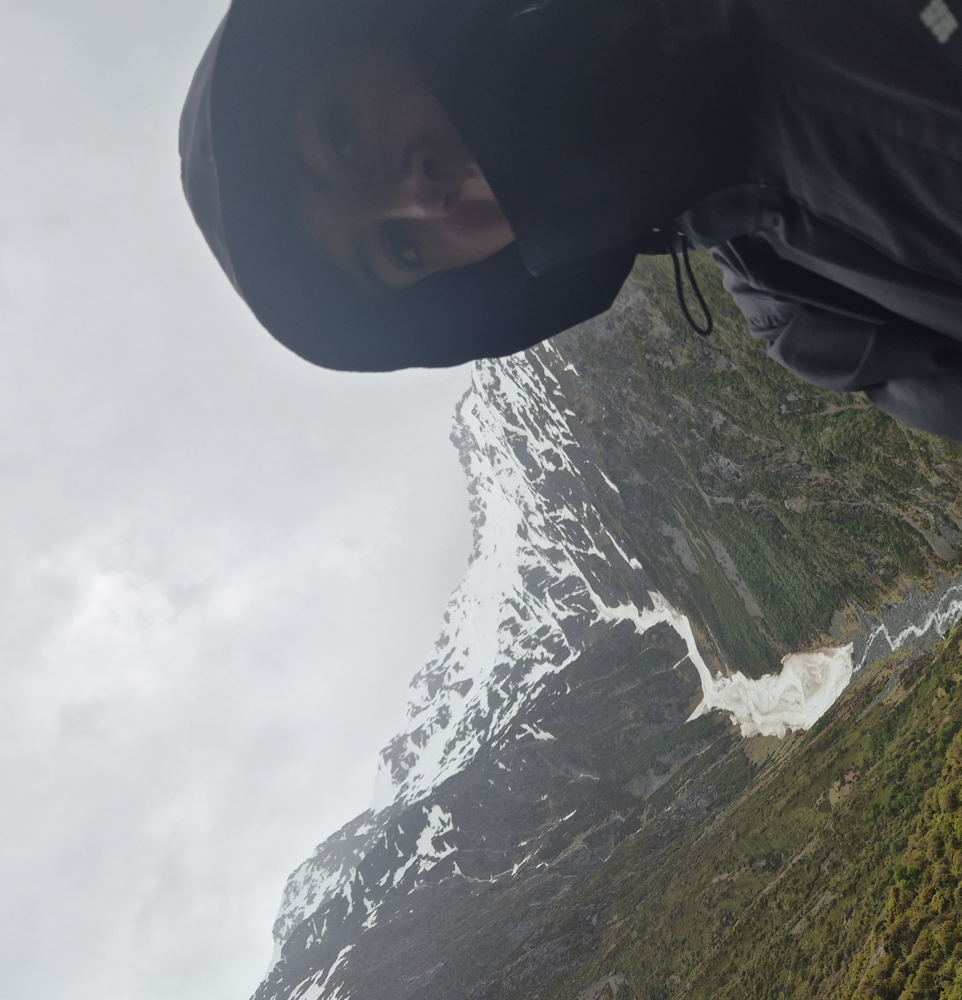
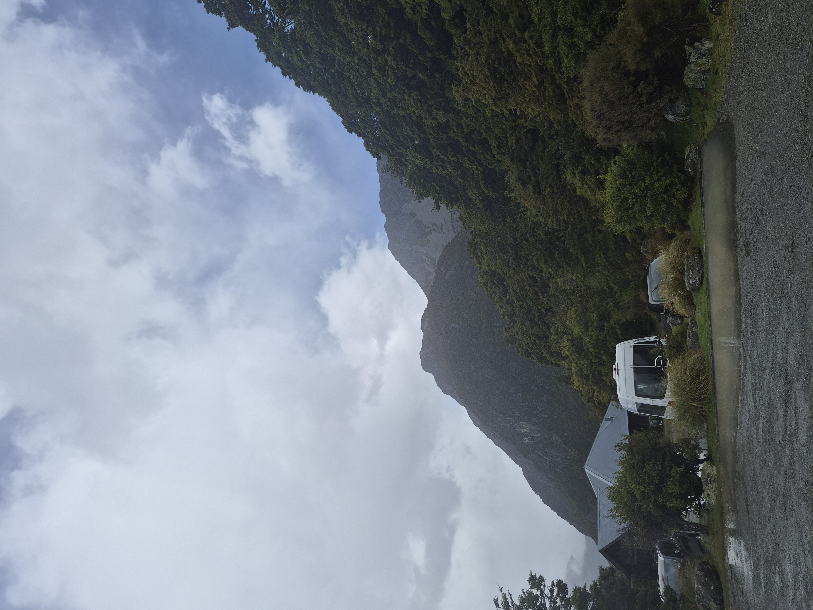
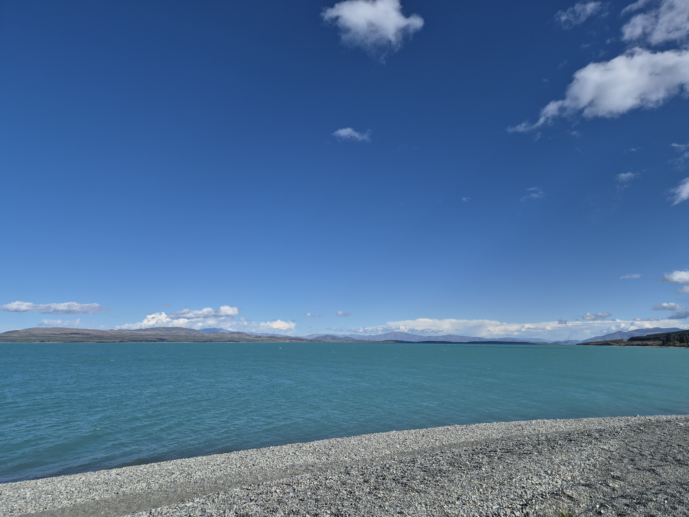
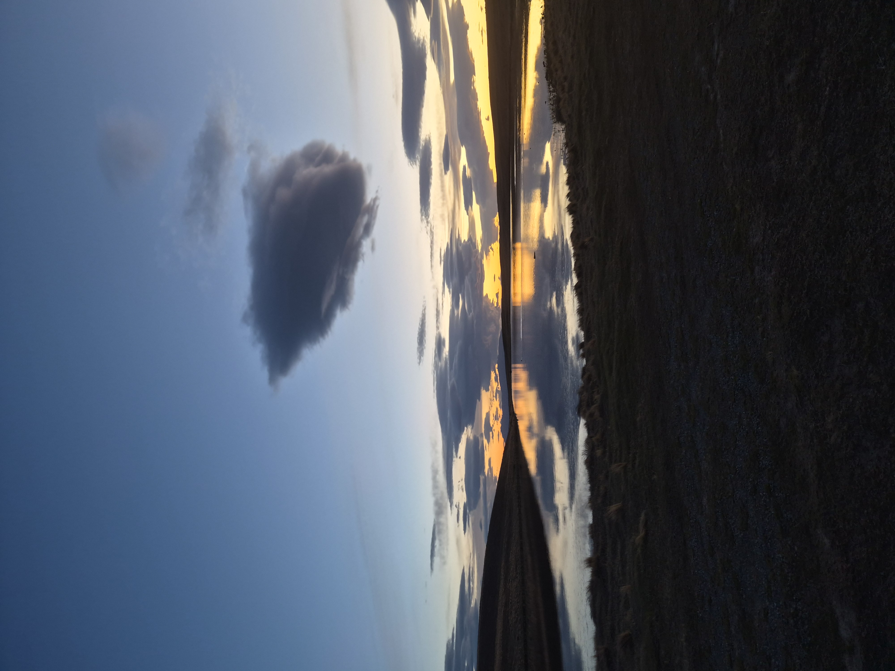
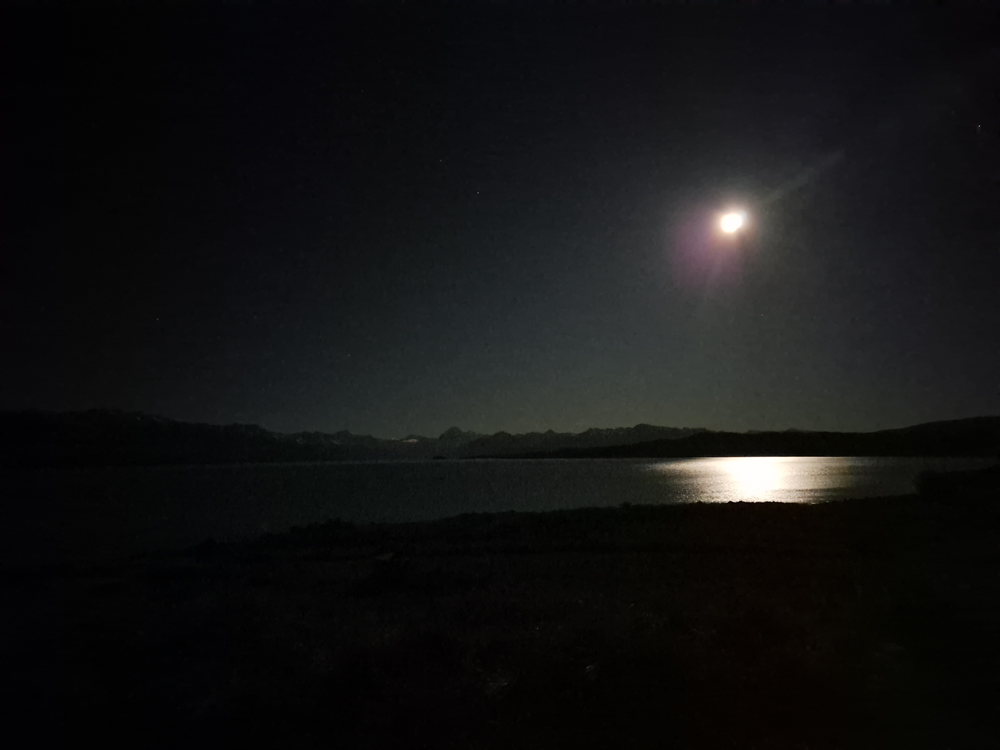

Went to Wanaka last week, climbed Mt Isthmus. Maybe took 5 hours total, about 3 hrs up and 2 down. I think the sense of accomplishment at the top was not worth the 3 hour climb up, got very sweaty. But looking back I am glad I did it as at the end of the day it is a mountain to be climbed. I think once your at the top your very much just thinking about the next 2 hours downhill. Anyway, have a video of when I though the peak was just round the corner, I didn't realise how heavy I was breathing so maybe don't listen to that with sound. Then another where I realised there was another 2 uphills to go before I was at the end, I look very sad about this.

I think my favourite part was about an hour from the top where the mountain above you looks like a shear face, made me feel very small. Omg and then genuinely this deer popped up like right in front of me, just out of the bushes. It didn't even run away as I went past it was crazy. Saw some very spiky rocks at the top, which felt very Lord Of the Rings - still not quite sure where they filmed everything so I'm gonna say that these rocks were in the films somewhere. Stayed the night in Wanaka, got ramen for dinner and went to the cinema ! Very fun day overall, I then tried to find orange hair dye but Wanaka doesn't seem to have a chemist warehouse :0. Drove back through the mountains, I think i'm getting better at the windy roads but I have yet to tackle the roads near Queenstown.


Next weekend I went to Mount Cook and did the Red Tarns track. Only 2 hours return so a piece of cake really. It was all stairs but it was raining so it wasn't too hot. However when I got the top I couldn't see Mt Cook as the clouds were blocking it. I didn't really mind as I always think mountains look much cooler and more dramatic in bad weather. After I stopped off at this beach on the drive back, super quick change in weather.




Full moon at the moment, got a picture of it in front of the lake on my drive home. Dusk is still my favourite time of day and here is why.

